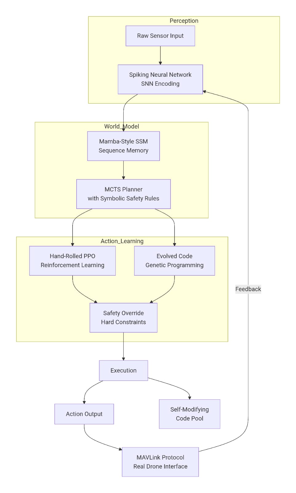
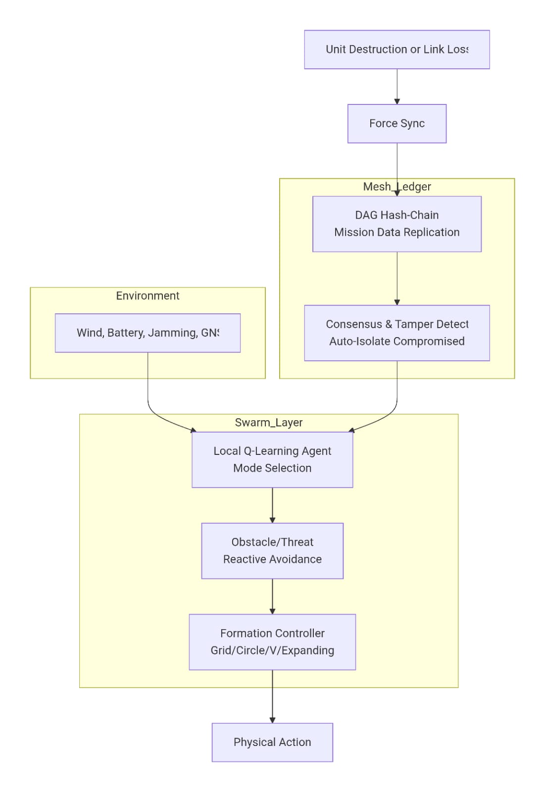
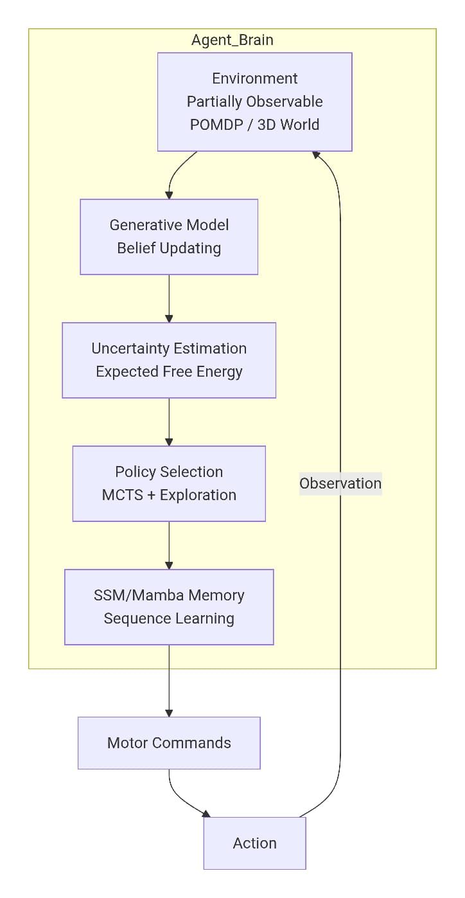
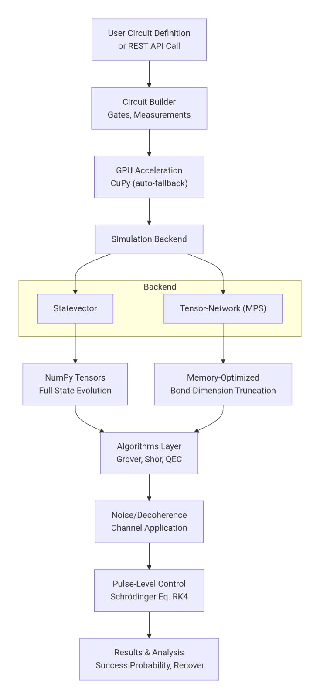
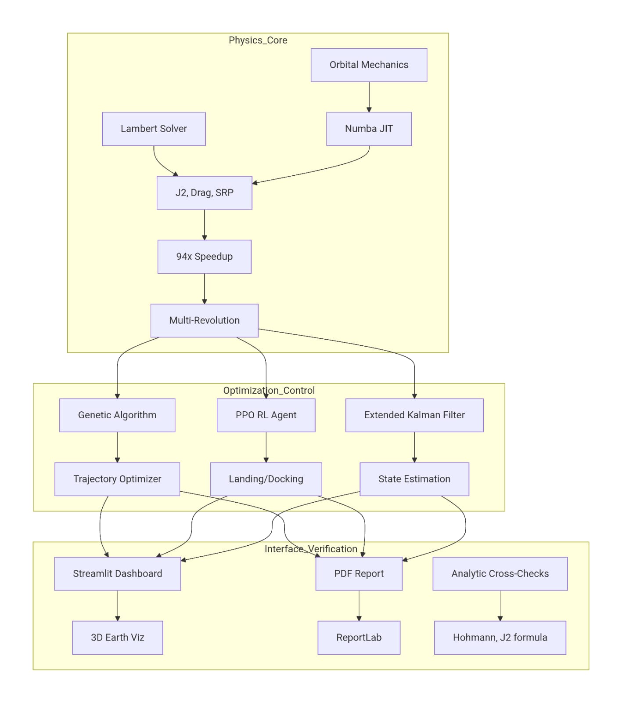
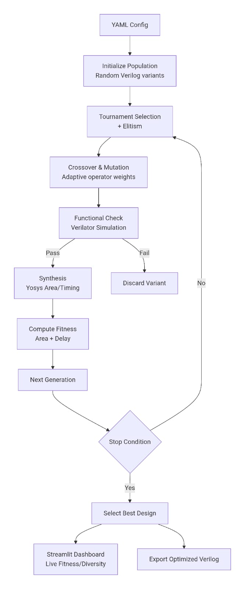
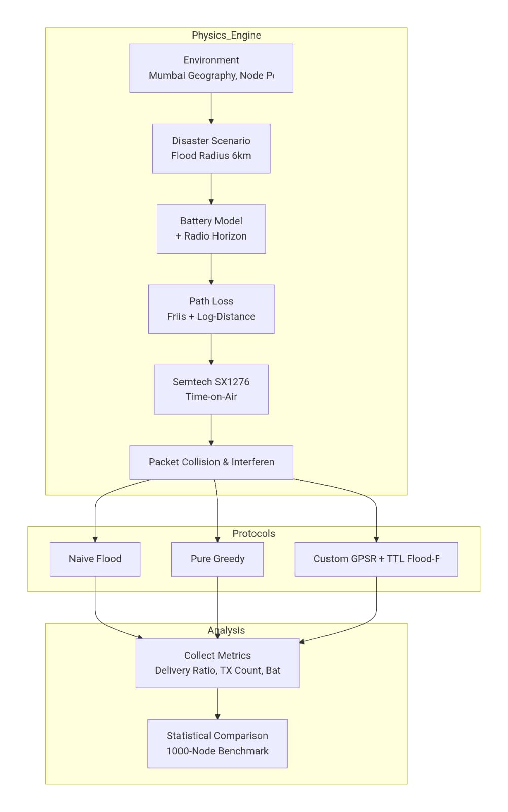
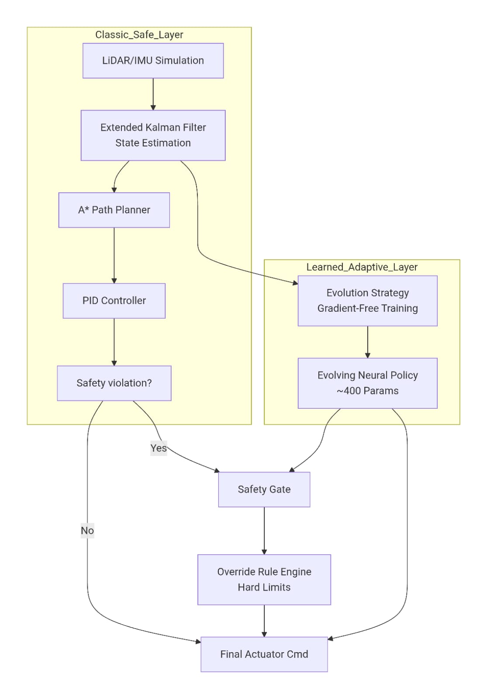
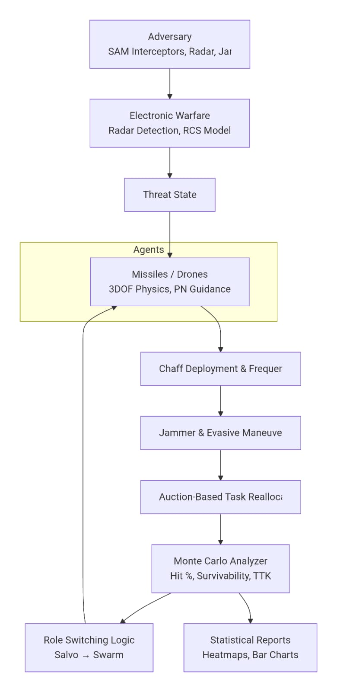
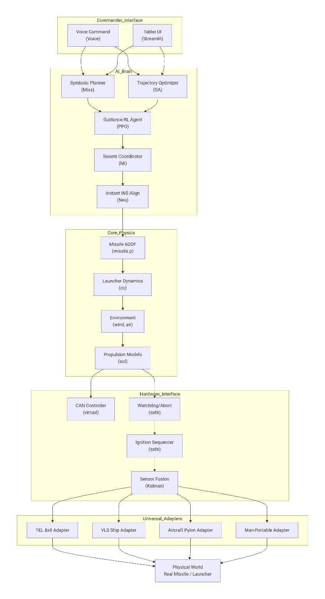

10
Modules Built
I build zero-LLM, CPU-constrained autonomous systems — from swarm robotics to quantum simulators — using first-principles engineering over off-the-shelf pipelines. Self-taught, independent, focused on systems that keep working when the cloud isn't there.
Self-taught, independent systems builder — no formal CS degree. Everything here was learned and built outside a classroom: autonomous robotics, swarm intelligence, quantum simulation, and AI systems, engineered from first principles rather than assembled from tutorials.
Based in Uttar Pradesh, India, building on constrained hardware — a single CPU-only laptop (Ryzen 3, 8GB RAM), no dedicated GPU. Every project in this portfolio was designed to run within that constraint, not around it.
Currently focused on securing international fellowships and grants to fund hardware development and team-building toward a long-term goal: autonomous robot systems operating on Earth, the Moon, and Mars.
Most "intelligent" systems today are wrappers around cloud LLMs — dependent on connectivity, GPUs, and API uptime. That breaks exactly where autonomy matters most: disaster zones, space, and disconnected edge environments with no guaranteed network or compute. Every system in this portfolio is built to run without any of that — interpretable, offline-capable, and deployable on constrained hardware. That's the bet: autonomy that keeps working when the cloud isn't there.










All code above is public on GitHub right now — browse any repo directly via the links on each project card. Building toward funding to eventually spin some of this into a company; happy to talk fellowships, mentorship, or collaboration.
raghavendrapratapsingh54343@gmail.com